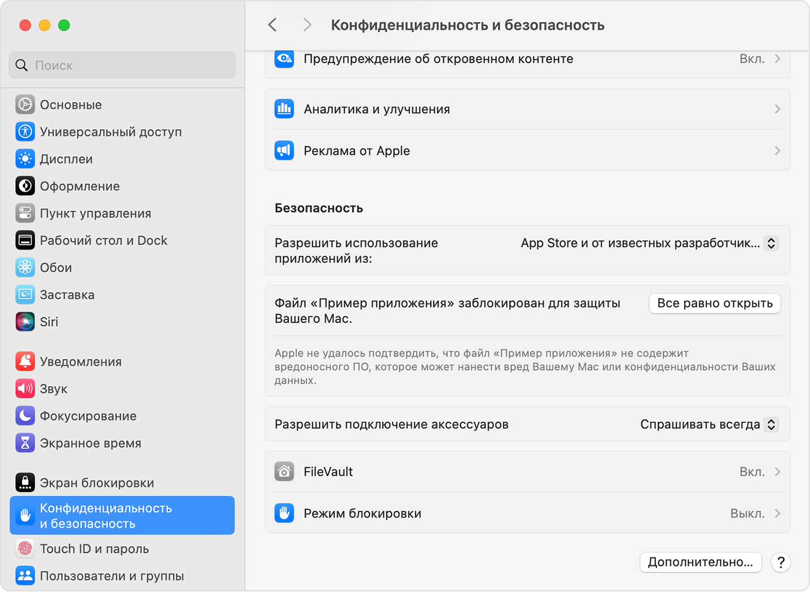

Перенесите SkillCue в «Программы»
Откройте скачанный DMG и перетащите значок SkillCue на папку «Программы». Затем откройте SkillCue из этой папки.
Если заменяете старую версию, сначала завершите SkillCue и подтвердите замену.
Закройте предупреждение кнопкой «Готово»
Если появилось окно «Apple не удалось подтвердить…», нажмите «Готово» (на некоторых версиях macOS — «Отмена»). Приложение остаётся в «Программах».
Если SkillCue сразу открылась, переходите к шагу 4.
Нажмите «Всё равно открыть»
Дважды нажмите «Настройки безопасности» в окне установщика. Или откройте этот раздел вручную:
Меню Apple → Системные настройки → Конфиденциальность и безопасность
Прокрутите вниз до блока «Безопасность». Найдите строку про заблокированный файл SkillCue и нажмите «Всё равно открыть».

Нужная кнопка обведена зелёным. На скриншоте Apple написано «Пример приложения» — у вас будет SkillCue. Вид окна зависит от версии macOS. Источник: Apple. Подтвердите действие паролем Mac или Touch ID, если потребуется. В следующем окне нажмите «Открыть».
Готово — SkillCue можно запускать обычно
macOS сохранит разрешение для этой сборки. В следующий раз открывайте SkillCue из «Программ» или Dock.
Войдите через Google, чтобы подключить профиль и подписку. При использовании записи приложение отдельно запросит микрофон и запись экрана с системным звуком.
Текущая сборка не прошла проверку Apple. Разрешайте запуск только для SkillCue, скачанной с skill-cue.ru или из нашего релиза на GitHub. После обновления macOS может попросить разрешение снова.
Нет кнопки «Всё равно открыть»?
Сначала попробуйте запустить SkillCue из «Программ» и закройте предупреждение. После этого снова откройте настройки безопасности. На рабочем Mac установку может ограничивать администратор.
Написано «Приложение повреждено» или запуск не удался?
Пришлите снимок окна и версию macOS в поддержку SkillCue. Сообщение о повреждении не является обычным шагом установки.